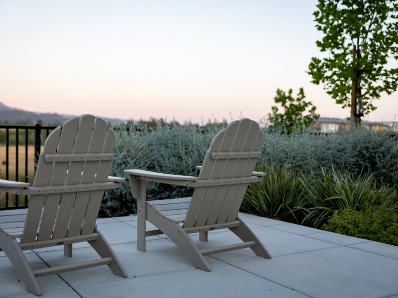
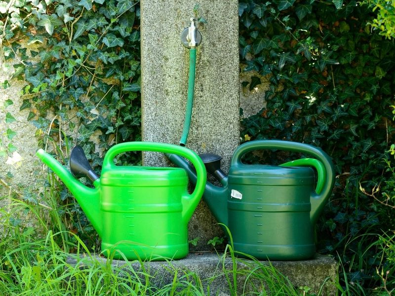
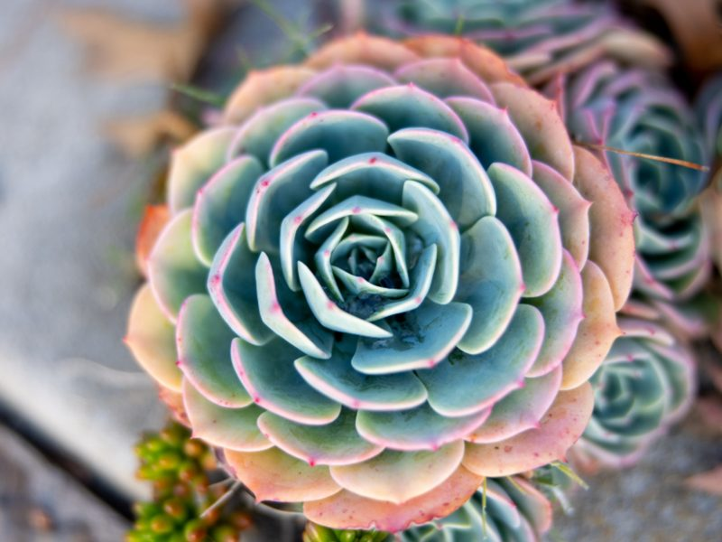

Garden Design
We design your garden from the ground up and build it for you, turning an empty plot into a place you actually want to sit in.

We design your garden from the ground up and build it for you, turning an empty plot into a place you actually want to sit in.

Regular seasonal care from our own team, so your garden looks as good in year three as it did on the day we finished it.

A small on-site nursery stocked with indoor and outdoor plants. Come and choose yours in person, with advice from the growers.